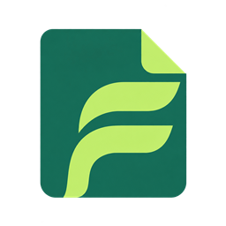

flownote체험판으로 돌아가기회사 계정으로 시작하세요.
이메일 확인을 마친 계정으로 회사·고객·프로젝트를 Supabase에 저장합니다.
클라우드 초기 연결판입니다. 회사·고객·프로젝트 등록 화면을 제공합니다. 일반 고객의 가입 메일 발송은 준비 중이며, 현재 가입은 개발 검증용입니다. 보고서 작성·검수 화면은 아직 로컬 운영판이고 공개 체험판의 가상 데이터와 연결되지 않습니다.
인증 연결을 확인하고 있습니다…

flownote체험판으로 돌아가기이메일 확인을 마친 계정으로 회사·고객·프로젝트를 Supabase에 저장합니다.
인증 연결을 확인하고 있습니다…